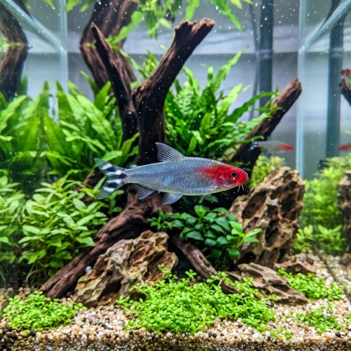

Nome popular principal
Rodóstomo
Rodóstomo, Rodostomo, Rodóstomo-Nariz-de-Bêbado, Tetra-Rodóstomo
Ficha de peixe
Tetras e Caracídeos
Famoso por nadar em cardumes perfeitamente sincronizados e pela cor vermelha viva na cabeça que indica a qualidade da água.

Nome popular principal
Rodóstomo, Rodostomo, Rodóstomo-Nariz-de-Bêbado, Tetra-Rodóstomo
Nome científico
Nome técnico essencial para taxonomia, cruzamento de manejo e referência editorial consistente.
Dificuldade de manejo
Use este nível como referência inicial, sempre considerando volume, estabilidade e compatibilidade do aquário.
Seção 1
Seção 2
Seções 4 a 6
Rodóstomo tem hábito alimentar onívoro. Excelente. 1 a 2 vezes ao dia em pequenas porções. Alimenta-se muito bem de rações de alta qualidade em microgrãos ou flocos, além de pequenas presas vivas como dáfnias e artêmias.
Fêmeas adultas possuem o corpo ligeiramente mais volumoso na região abdominal, enquanto os machos são mais esguios. Tipo de reprodução: Ovíparo. Dificuldade de reprodução: Avançado. A reprodução exige água mole, ácida e ambiente com pouca iluminação, pois seus ovos são muito sensíveis à luz.
Alta. Substrato recomendado: Substrato escuro ou areia fina de rio. Necessidade de esconderijos: Média. Destaca sua coloração avermelhada quando mantido em aquários densamente plantados com troncos e substrato escuro.
Seção 7
Atinge cerca de 5 cm e pode viver até 5 anos em condições estáveis de água limpa e bem filtrada.
Seção 8
A perda do tom vermelho vivo ocorre quando o peixe está estressado, doente ou mantido em água com parâmetros inadequados e amônia alta.
O ideal é manter um grupo mínimo de 8 a 10 indivíduos para que formem um cardume bonito e se sintam protegidos.
Sim, é uma das melhores combinações para aquários comunitários de água ácida, pois ambos apreciam parâmetros semelhantes.